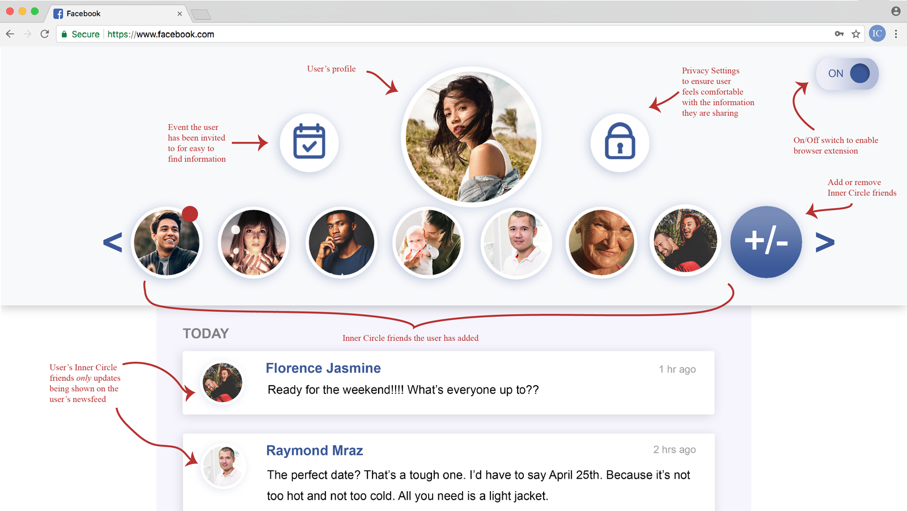

Talk about the move for fee for service and how Surrey Place had to adjust quickly to better showcase their services. By enabling Inner Circle through their web browser, users will be able to use their Facebook account in a simplified and accessible way.
Talk about how this had to be done in a week and it was based off of an excel spreadsheet.

While researching design choices that were best suited to my target audience, I discovered how beneficial it is to make all designs accessible in order to get the user feeling comfortable and confident when using your product, even if that means changing some aesthetics and features. The accessible design choices I made in Inner Circle are reflected in the size, colour, font choices and overall white space of the design. Each choice was made with intention that was a result of my research and speaking with my target audience.
Information ArchitectureTalk about the different flows they wanted to highlight
 OutcomeTalk about how it shaped the future redesign of the website and how it was able to help maintain the overall content from getting too crowded etc. Also above this, have the different pages or mocks.